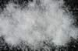

|
|
(For further information on spectroscopy, see:
http://speclab.cr.usgs.gov)
TITLE: Wollastonite HS348 DESCRIPT
DOCUMENTATION_FORMAT: MINERAL
SAMPLE_ID: HS348
MINERAL_TYPE: Inosilicate
MINERAL: Wollastonite
FORMULA: CaSiO3
FORMULA_HTML: CaSiO3
COLLECTION_LOCALITY: Santa Fe Mine, Pichucalco, Chiapas, Mexico
ORIGINAL_DONOR: Hunt and Salisbury Collection
CURRENT_SAMPLE_LOCATION: USGS Denver Spectroscopy Laboratory
ULTIMATE_SAMPLE_LOCATION: USGS Denver Spectroscopy Laboratory
SAMPLE_DESCRIPTION:
Sieve interval 74-250µm.
"Results of petrographic examination: Single crystal 2 x 0.5 x 1 cm and one large piece 4 x 0.5 x 1. cm. One dirty surface and sulfide inclusions which were separated by crushing and hand picking. Under petrographic microscope, some grains show a little alteration and inclusions or voids along cleavage directions - possible exsolved pyroxene?"
Salisbury, J. W., Walter, L. W., and Vergo, N., 1987, Mid-Infrared (2.1-25µm) Spectra of Minerals: First Edition, U.S. Geological Survey Open File Report 87-263.
IMAGE_OF_SAMPLE:

END_SAMPLE_DESCRIPTION.
XRD_ANALYSIS:
X-ray analysis indicates sample is pure.
Salisbury, J. W., Walter, L. W., and Vergo, N., 1987, Mid-Infrared (2.1-25µm) Spectra of Minerals: First Edition, U.S. Geological Survey Open File Report 87-263.
END_XRD_ANALYSIS.
COMPOSITIONAL_ANALYSIS_TYPE: EM (WDS) # XRF, EM(WDS), ICP(Trace), WChem
| COMPOSITION KEYWORD |
Oxide ASCII |
Amount | Weight Percent, % |
Oxide html |
|---|---|---|---|---|
| COMPOSITION: | SiO2 | 50.84 | wt% | SiO2 |
| COMPOSITION: | TiO2 | 0.01 | wt% | TiO2 |
| COMPOSITION: | Al2O3 | 0.05 | wt% | Al2O3 |
| COMPOSITION: | FeO | 0.18 | wt% | FeO |
| COMPOSITION: | MnO | 0.75 | wt% | MnO |
| COMPOSITION: | MgO | 0.08 | wt% | MgO |
| COMPOSITION: | CaO | 47.62 | wt% | CaO |
| COMPOSITION: | Na2O | 0.01 | wt% | Na2O |
| COMPOSITION: | K2O | 0.03 | wt% | K2O |
| COMPOSITION: | Total | 99.57 | wt% |
COMPOSITION_TRACE:
COMPOSITION_DISCUSSION:
Microprobe analysis shows that sample is homogeneous between and within grains. Average of 7 analyses.
Salisbury, J. W., Walter, L. W., and Vergo, N., 1987, Mid-Infrared (2.1-25µm) Spectra of Minerals: First Edition, U.S. Geological Survey Open File Report 87-263.
END_COMPOSITION_DISCUSSION.
MICROSCOPIC_EXAMINATION:
Colorless transparent to white. Almost no contamination visually apparent. Insignificant number of crystals with small (1/50th the size of the wollastonite crystal) embedded dark grains.
END_MICROSCOPIC_EXAMINATION.
SPECTROSCOPIC_DISCUSSION:
END_SPECTROSCOPIC_DISCUSSION.
SPECTRAL_PURITY: 1b2c3c4c # 1= 0.2-3, 2= 1.5-6, 3= 6-25, 4= 20-150 microns
| LIB_SPECTRA_HED: | where | Wave Range | Av_Rs_Pwr | Comment |
|---|---|---|---|---|
| LIB_SPECTRA: | splib04a r 5170 | 0.2-3.0µm | 200 | g.s.= |
| LIB_SPECTRA: | splib05a r 7038 | 0.2-3.0µm | 200 | g.s.= |
| LIB_SPECTRA: | splib06a r 23639 | g.s.= | ||
| LIB_SPECTRA: | splib06a r 23652 | g.s.= |
{kind=link}